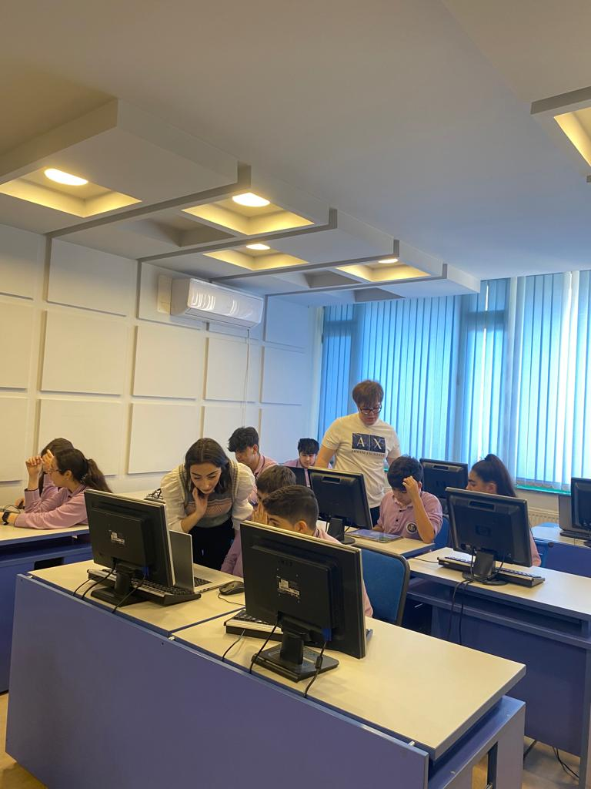
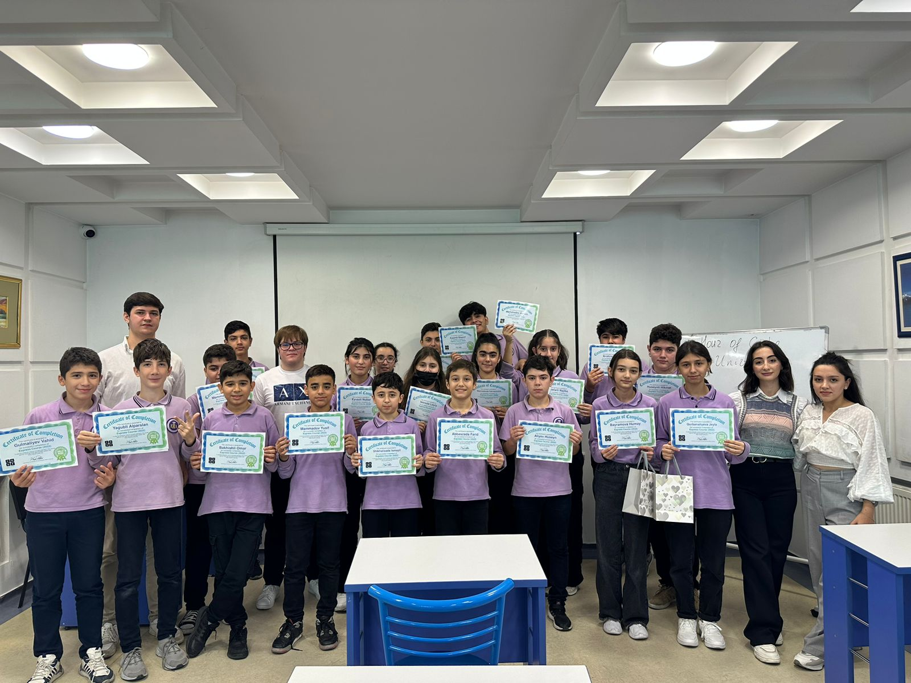

Code.org is one of the best international sites that helps new programming learners understand the basic structures and semantics of programming languages. Some students are highly interested in coding and the technology world, at this time code.org is the effective guide option for them. In the beginning, the provided videos and music created an interactive environment which made children more enthusiastic during the event.
It gives us great pleasure to share with you the amazing experience that our team had teaching children to code as part of Code.org's Hour of Code project! 🎟✨ On November 1, 2023, we held a coding event at Baku ERA School, where we presented these 21 brilliant young minds to the world of algorithms, problem-solving, and project creation. 🖥💡 It was really wonderful to watch their passion and excitement increase as they learned to code. 💪💻 We worked together, shared knowledge, and had a great time in the process! 💪✯ We are honored to be a part of this incredible activity as ADA students! Our group is appreciative to the Baku ERA School's director and teachers for giving us the chance to successfully carry out our event.🎉 #HourOfCode #KodSaatı #SITE1101 #adauniversity